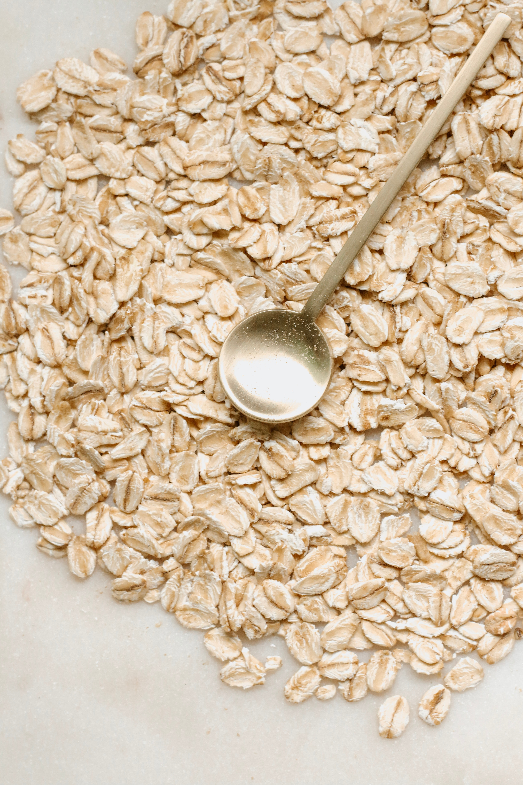

Design Challenge
I started by discovering what the problem was and how I could creatively solve it. In order to do this, I used the IDEO Field Guide to Human-Centered Design to ask myself questions about Just Bakery and their website.
I started by discovering what the problem was and how I could creatively solve it. In order to do this, I used the IDEO Field Guide to Human-Centered Design to ask myself questions about Just Bakery and their website.

I expanded my knowledge on my client Just Bakery through an intensive search of their website and by interviewing their director and a potential client, and then, I looked to different websites for more information regarding the refugee crisis and how to use design to foster cultural inclusivity.
My primary and secondary research as well as the design challenge helped guide me into forming goals for my website and narrowed down the specific audiences that Just Bakery targets.